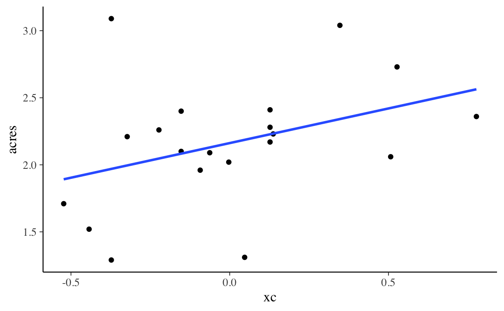
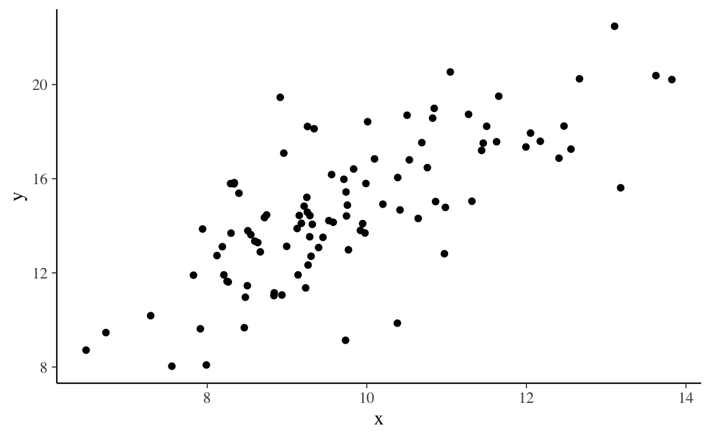

1.1 Regressione bivariata
Il modello di regressione bivariata descrive l’associazione tra il valore atteso di \(Y \mid x_i\) e \(x\) nei termini di una relazione lineare:
\[ \mathbb{E}(Y \mid x_i) = \alpha + \beta x_i, \] dove i valori \(x_i\) sono considerati fissi per disegno. Nel modello “classico”, si assume che le distribuzioni \(Y \mid x_i\) siano Normali con deviazione standard \(\sigma_\varepsilon\).
Il significato dei coefficienti di regressione è semplice:
- \(\alpha\) è il valore atteso di \(Y\) quando \(X = 0\);
- \(\beta\) è l’incremento atteso nel valore atteso di \(Y\) quando \(X\) aumenta di un’unità.
Per fare un esempio, consideriamo i dati dell’antropologo Sahlins, il quale si è chiesto se esiste un’associazione tra l’ampiezza del clan (consumers) e l’area occupata da quel clan (acres) in una popolazione di cacciatori-raccoglitori. I dati sono i seguenti:
data(Sahlins)
head(Sahlins)
#> consumers acres
#> 1 1.00 1.71
#> 2 1.08 1.52
#> 3 1.15 1.29
#> 4 1.15 3.09
#> 5 1.20 2.21
#> 6 1.30 2.26Sahlins %>%
ggplot(aes(x = consumers, y = acres)) +
geom_point() +
geom_smooth(method = lm, se = FALSE)
fm <- lm(acres ~ consumers, data = Sahlins)
fm$coef
#> (Intercept) consumers
#> 1.3756445 0.5163201Dalla figura notiamo che, se consumers aumenta di un’unità (da 1.2 a 2.2), allora la retta di regressione (ovvero, il valore atteso di \(Y\)) aumenta di circa 0.5 punti – esattamente, aumenta di 0.5163 punti, come indicato dalla stima del coefficiente \(\beta\). L’interpretazione del coefficiente \(\alpha\) è più problematica, perché non ha senso pensare ad un clan di ampiezza 0. Per affrontare questo problema, centriamo il predittore.
1.1.1 Regressori centrati
Esprimiamo la variabile consumers nei termini degli scarti dalla media:
Sahlins <- Sahlins %>%
mutate(
xc = consumers - mean(consumers)
)Svolgiamo nuovamente l’analisi di regressione con il nuovo predittore:
fm1 <- lm(acres ~ xc, data = Sahlins)
fm1$coef
#> (Intercept) xc
#> 2.1620000 0.5163201Sahlins %>%
ggplot(aes(x = xc, y = acres)) +
geom_point() +
geom_smooth(method = lm, se = FALSE)
La stima di \(\beta\) è rimasta invariata ma ora possiamo attribuire un significato alla stima di \(\alpha\): questo coefficiente indica il valore atteso della \(Y\) quando \(X\) assume il suo valore medio.
1.1.2 Minimi quadrati
La stima dei coefficienti del modello di regressione può essere effettuata in modi diversi: massima verosimiglianza o metodi bayesiani. Se ci limitiamo qui alla massima verosimiglianza possiamo semplificare il problema assumento che le distribuzioni condizionate \(Y \mid x\) siano Normali. In tali circostanze, la stima dei coefficienti del modello di regressione può essere trovata con il metodo dei minimi quadrati.
In pratica, questo significa trovare i coefficienti \(a\) e \(b\) che minimizzano
\[ SS_{\text{res}} = \sum(y_i - \hat{y}_i)^2, \] con \(\hat{y}_i = a + b x_i\).
Per fornire un’idea di come questo viene fatto, usiamo una simulazione. Per semplicità, supponiamo di conoscere \(a = 1.3756445\) e di volere stimare \(b\).
x <- Sahlins$consumers
y <- Sahlins$acres
a <- 1.3756445
nrep <- 1e3
b <- seq(0, 1, length.out = nrep)
ssres <- rep(NA, nrep)
for (i in 1:nrep) {
yhat <- a + b[i] * x
ssres[i] <- sum((y - yhat)^2)
}Un grafico di \(SS_{\text{res}}\) in funzione di \(b\) mostra che il valore \(b\) che minimizza \(SS_{\text{res}}\) corrisponde, appunto, a 0.5163.
tibble(b, ssres) %>%
ggplot(aes(x = b, y = ssres)) +
geom_line()
1.1.3 Relazione tra \(b\) e \(r\)
Un altro modo per interpretare \(b\) è quello di considerare la relazione tra la pendenza della retta di regressione e il coefficiente di correlazione:
\[ b_X = r_{XY} \frac{S_X}{S_Y} \]
L’equazione precedente rende chiaro che, se i dati sono standardizzati, \(b = r\).
Verifichiamo:
Sahlins %>%
dplyr::select(acres, consumers) %>%
cor()
#> acres consumers
#> acres 1.0000000 0.3756561
#> consumers 0.3756561 1.0000000fm2 <- lm(scale(acres) ~ scale(consumers), data = Sahlins)
fm2$coef
#> (Intercept) scale(consumers)
#> 9.917106e-17 3.756561e-011.1.4 Attenuazione
Il fenomeno dell’attenuazione si verifica quando \(X\) viene misurato con una componente di errore. Esaminiamo la seguente simulazione.
set.seed(1234)
n <- 100
x <- rnorm(n, 10, 1.5)
y <- 1.5 * x + rnorm(n, 0, 2)
tibble(x, y) %>%
ggplot(aes(x, y)) +
geom_point()
sim_dat <- tibble(x, y)
fm <- lm(y ~ x, sim_dat)
fm$coef
#> (Intercept) x
#> 0.4221074 1.4652201Questi sono i coefficienti di regressione quando \(X\) è misurata senza errori.
sim_dat <- sim_dat %>%
mutate(
x1 = x + rnorm(n, 0, 2)
)
fm1 <- lm(y ~ x1, sim_dat)
fm1$coef
#> (Intercept) x1
#> 8.3872176 0.6295924Aggiungendo una componente d’errore su \(X\), la grandezza del coefficiente \(b\) diminuisce.
1.1.5 Coefficiente di determinazione
Tecnicamente, il coefficiente di determinazione è dato da:
\[ R^2 = \frac{\sum(\hat{y} - \bar{y})^2}{\sum(y_i - \bar{y})^2} \]
Al denominatore abbiamo la devianza totale, ovvero una misura della dispersione di \(y_i\) rispetto alla media \(\bar{y}\). Al numeratore abbiamo una misura della dispersione del valore atteso della \(Y\) rispetto alla sua media. Il rapporto, dunque, ci dice qual è la quota della variabilità totale di \(Y\) che può essere predetta in base al modello lineare.
Per i dati di Sahlins abbiamo:
mod <- lm(acres ~ consumers, data = Sahlins)
a <- mod$coef[1]
b <- mod$coef[2]
yhat <- a + b * Sahlins$consumers
ss_tot <- sum((Sahlins$acres - mean(Sahlins$acres))^2)
ss_reg <- sum((yhat - mean(Sahlins$acres))^2)
r2 <- ss_reg / ss_tot
r2
#> [1] 0.1411175Verifichiamo:
summary(mod)
#>
#> Call:
#> lm(formula = acres ~ consumers, data = Sahlins)
#>
#> Residuals:
#> Min 1Q Median 3Q Max
#> -0.8763 -0.1873 -0.0211 0.2135 1.1206
#>
#> Coefficients:
#> Estimate Std. Error t value Pr(>|t|)
#> (Intercept) 1.3756 0.4684 2.937 0.00881 **
#> consumers 0.5163 0.3002 1.720 0.10263
#> ---
#> Signif. codes: 0 '***' 0.001 '**' 0.01 '*' 0.05 '.' 0.1 ' ' 1
#>
#> Residual standard error: 0.4543 on 18 degrees of freedom
#> Multiple R-squared: 0.1411, Adjusted R-squared: 0.0934
#> F-statistic: 2.957 on 1 and 18 DF, p-value: 0.1026Da cui deriva che \(R^2\) è uguale al quadrato del coefficiente di correlazione:
cor(Sahlins$acres, Sahlins$consumers)^2
#> [1] 0.14111751.1.6 Errore standard della regressione
L’errore standard della regressione è una stima della dispersione di \(y \mid x_i\) nella popolazione. Non è altro che la deviazione standard dei residui
\[ e = y_i - \hat{y}_i \]
che, al denominatore, riporta \(n-2\). La ragione è che, per calcolare \(\hat{y}\), vengono “perduti” due gradi di libertà – il calcolo di \(\hat{y}\) è basato sulla stima di due coefficienti: \(a\) e \(b\).
e <- yhat - Sahlins$acres
(sum(e^2) / (length(Sahlins$acres) - 2)) %>%
sqrt()
#> [1] 0.4543179Il valore trovato corrisponde a quello riportato nell’output di lm().